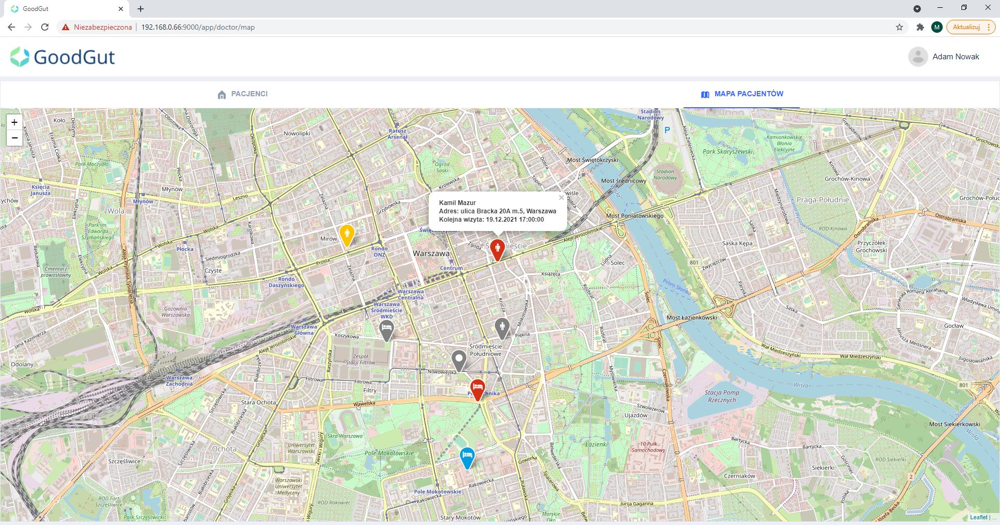
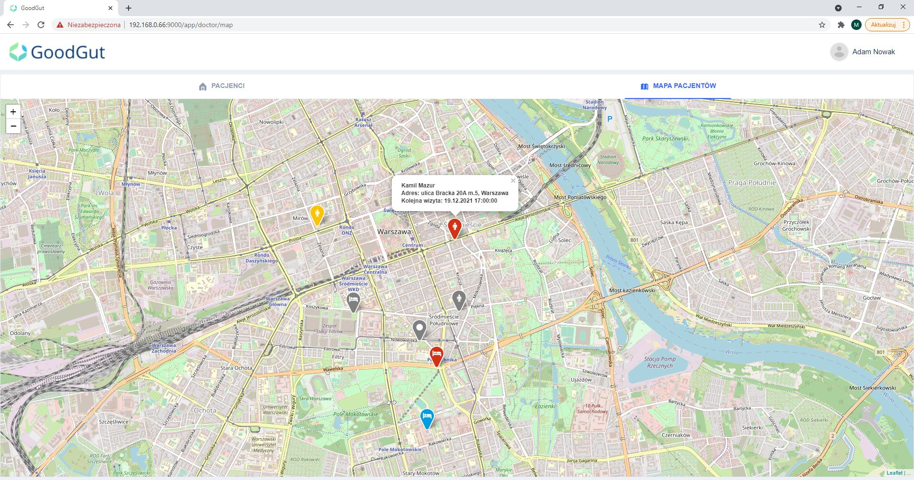

Aplikacja webowa dla personelu medycznego i pacjenta do wspomagania procedur domowego żywienia dojelitowego
 

W ramach pracy dyplomowej prowadzonej na Wydziale Matematyki i Nauk Informacyjnych PW przy ścisłej współpracy w Katedrą i Kliniką Chirurgii Ogólnej, Gastroenterologicznej i Onkologicznej WUM została utworzona aplikacja webowa, która ma wspomóc zarówno pracę personelu medycznego w ramach obowiązków wynikających z programu domowego żywienia dojelitowego, jak i codziennego raportowania przez pacjentów lub ich opiekunów stanu zdrowia pacjentów. Aplikacja usprawnia przepływ informacji pomiędzy lekarzem, a pacjentem, pozwala w przejrzysty sposób monitorować oraz planować prowadzone okresowe wizyty lekarsko-pielęgniarskie, a zarazem optymalizuje koszty oraz czas personelu medycznego w zakresie wyznaczania harmonogramu i kolejności wizyt pacjentów w danym dniu. Poza tym na podstawie przechowywanych przez system danych są generowane formularze zgodne z wymaganiami NFZ, co eliminuje potrzebę ręcznego uzupełnienia conajmniej danych osobowych pacjenta.
Główne funkcjonalności
- trzy rodzaje użytkowników: pacjent, lekarz, administrator
- przechowywanie informacji o pacjentach i generowanie wypełnionych formularzy do druku zgodnych z wymaganiami NFZ
- mapa lokalizacji pacjentów z informacją o terminie najliższej wizyty kontrolnej
- wypełnianie codziennie kart autokontroli przez pacjenta lub jego opiekuna dostępnych do wglądu lekarza
Wersja mobilna
Nagrania 
Partnerzy
Kontakt
kontakt@goodgut.pl(+48) 579 079 543